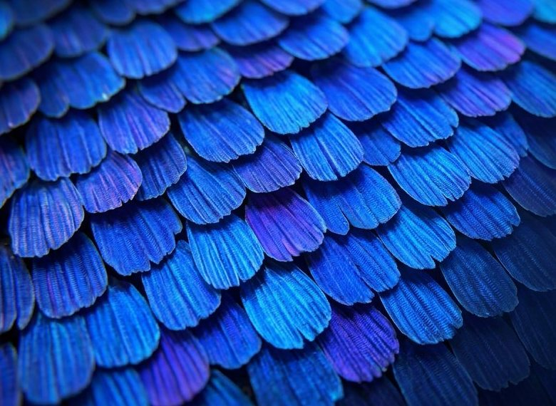

Perception · established science
Where color comes from
The apple carries reflectance properties. The color is the meeting. A Quest for the Big TOE, Element 1, Reality is Fundamentally Relational (p. 48). The detailed treatment is in Element 17, Vision as Reality Construction (p. 367).
The book says color is not in the object and not in the light, but in the meeting of the two inside a visual system. That is easy to agree with and hard to feel. Here is the meeting made visible, twice: once where your own eye supplies the color, and once where the object makes color from structure, with no pigment at all.
Color made by the viewer
Your eye supplies the color
This Earth is painted in the wrong colors, an orange sea and pink land. Stare at the × at its center, hold still, and let the timer run. When the paint is taken away, the sea turns blue and the land turns green. The screen never held those colors. The meeting happened in you.
Why it happens: the color-sensing cells in your eye tire where they are held on one hue, so when the hue is removed the balance tips to its opposite, red against green, blue against yellow. The brain reads that imbalance as the opposite color, in the shape you were fixating. This is the negative afterimage, a standard result of opponent-process vision (Hering). How strong it looks varies from person to person and screen to screen, so take your own impression as a demonstration, not a measurement.
Color made by the object
Structure, with no pigment at all
The afterimage is color supplied by the viewer. These are colors made by shape, where the material holds no matching pigment. As the book puts it: remove the structure and the color vanishes completely.

Morpho butterfly
The wings hold no blue pigment. Microscopic ridges stacked like roof tiles cancel most wavelengths and reflect blue back out. Crush the structure and the blue is gone.
Structural color by thin-film interference (established optics).
Blue eyes, twice over
First the color: no human eye holds blue pigment. The blue is light scattered by fine tissue, the same physics as the sky. And every blue-eyed person is thought to trace to one ancestor who carried the first copy of the change, a few thousand years ago. “From this we can conclude that all blue-eyed individuals are linked to the same ancestor,” said the geneticist Hans Eiberg, who traced it. The same blue now looks out from faces of every background, a trait that crosses every line drawn between “races,” a quiet sign those lines are social, not biological.
Scattering in the iris stroma (established). One founder for blue eyes: Eiberg et al., 2008. Race as a social, not biological, category: American Association of Biological Anthropologists, 2019. Image: illustration.Polar bear fur
The hairs are not white. They are clear and hollow, and they scatter light so the coat looks white against the ice. The skin underneath is black, to soak up what warmth gets through.
Scattering by unpigmented, translucent guard hairs (established).The through-line is the book's: color is not a fixed label on a thing. It is an event between light, matter and a nervous system, a relationship rather than a possession. Element 1 sets this out, and Element 17, Vision as Reality Construction, develops how vision builds color. Read the passage on how color is made →